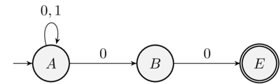

Expressões regulares
Construção de compiladores I
Objetivos
Objetivos
- Apresentar como utilizar expressões regulares para especificar a estrutura léxica de linguagens.
Objetivos
- Mostrar como produzir autômatos não determinísticos a partir de expressões regulares.
- Mostrar como obter um autômato determinístico a partir de um não determinístico.
Expressões regulares
Expressões regulares
- Forma algébrica para especificar linguagens regulares.
- Linguagens regulares: aceitas por AFDs
Expressões regulares
- Sintaxe
\begin{array}{lcl}
e & \to & \emptyset\:\mid\:\lambda\:\mid\: a\:\mid\:e\,e\:\mid\:e\,+\,e\:\mid\:e^*\\
\end{array}
Expressões regulares
- Expressões regulares denotam linguagens.
Expressões regulares
- Semântica:
\begin{array}{lcl}
\lbrack\!\lbrack \emptyset \rbrack\!\rbrack & = & \emptyset\\
\lbrack\!\lbrack \lambda \rbrack\!\rbrack & = & \{\lambda\}\\
\lbrack\!\lbrack a \rbrack\!\rbrack & = & \{a\}\\
\lbrack\!\lbrack e_1\!e_2 \rbrack\!\rbrack & = & \lbrack\!\lbrack e_1\rbrack\!\rbrack\:\lbrack\!\lbrack e_2\rbrack\!\rbrack\\
\lbrack\!\lbrack e_1\!+\!e_2 \rbrack\!\rbrack & = & \lbrack\!\lbrack e_1\rbrack\!\rbrack\!\cup\!\lbrack\!\lbrack e_2\rbrack\!\rbrack\\
\lbrack\!\lbrack e_1^*\rbrack\!\rbrack & = & \lbrack\!\lbrack e_1\rbrack\!\rbrack^*\\
\end{array}
Expressões regulares
- Expressões regulares são equivalentes a autômatos finitos não determinísticos.
- Equivalência definida pela construção de Thompson.
Autômatos não determinísticos
Autômatos não determinísticos
- Um AFN \(M=(E,\Sigma,\delta,I,F)\):
- \(E\) : conjunto de estados
- \(\Sigma\): alfabeto
- \(\delta : E\times\Sigma\to\mathcal{P}(E)\): função de transição.
- \(I \subseteq E\): conjunto de estados iniciais.
- \(F\subseteq E\): conjunto de estados finais.
Autômatos não determinísticos
- Exemplo: \((0+1)^*00\)

Autômatos não determinísticos.
- Seja \(M=(E,\Sigma,\delta,I,F)\) um AFN.
- O AFD equivalente é \((\mathcal{P}(E),\Sigma,\delta',I, F')\):
- \(\delta'(X,a) = \bigcup_{e\in X}\delta(e,a)\).
- \(F' = \{X\,|\, X \cap F = \emptyset\}\).
Autômatos não determinísticos
- Implementação em Haskell
data NFA a = NFA { numberOfStates :: Int , nfaStart :: Set a , nfaDelta :: a -> Char -> Set a , nfaFinals :: Set a }
Autômato não determinísticos
- Implementação em Haskell
subset :: Ord a => NFA a -> DFA (Set a) subset m = DFA { start = nfaStart m , delta = \ es c -> Set.unions (map (flip (nfaDelta m) c) (Set.elems es)) , finals = \ es -> not (disjoint es (nfaFinals m)) }
Construção de Thompson
Construção de Thompson
- Mostra como obter um AFN a partir de uma expressão regular.
- Estratégia utilizada por ferramentas de geração de analisadores léxicos.
Construção de Thompson
- AFN para \(e = \emptyset\).
Construção de Thompson
- AFN para \(e = \lambda\).
Construção de Thompson
- AFN para \(e = a\).
Construção de Thompson
- AFN para \(e = e_1 + e_2\).

Construção de Thompson
- AFN para \(e = e_1\:e_2\).

Construção de Thompson
- AFN para \(e = e_1^*\).

Construção de Thompson
- Como implementar?
- AFNs para casos bases.
- Funções para combinar AFNs.
Construção de Thompson
- AFN para \(\emptyset\).
emptyNFA :: NFA Int emptyNFA = NFA 0 Set.empty (\ _ _ -> Set.empty) Set.empty
Construção de Thompson
- AFN para \(\{\lambda\}\).
lambdaNFA :: NFA Int lambdaNFA = NFA 1 one (\ _ _ -> Set.empty) one where one = Set.singleton 1
Construção de Thompson
- AFN para \(\{a\}\).
chrNFA :: Char -> NFA Int chrNFA c = NFA 2 zero f one where zero = Set.singleton 0 one = Set.singleton 1 err = Set.singleton 2 f 0 x = if c == x then one else err f _ _ = err
Construção de Thompson
- Antes de definir funções para combinar AFNs, precisamos garantir que estes não possuam estados em comum.
Construção de Thompson
- Para isso, vamos "renomear" estados de um AFN.
shift :: Int -> Set Int -> Set Int shift n = Set.fromAscList . map (+ n) . Set.toAscList
Construção de Thompson
- AFN para \(e_1 + e_2\).
unionNFA :: NFA Int -> NFA Int -> NFA Int unionNFA m1 m2 = NFA { numberOfStates = n1 + n2 , nfaStart = Set.union (nfaStart m1) (shift n1 (nfaStart m2)) , nfaDelta = f , nfaFinals = Set.union (nfaFinals m2) (shift n1 (nfaFinals m2)) } where n1 = numberOfStates m1 n2 = numberOfStates m2 f s c = if s < n1 then nfaDelta m1 s c else shift n1 (nfaDelta m2 (s - n1) c)
Construção de Thompson
- AFN para \(e_1\:e_2\).
concatNFA :: NFA Int -> NFA Int -> NFA Int concatNFA m1 m2 = NFA { numberOfStates = n1 + n2 , nfaStart = newStart , nfaDelta = newDelta , nfaFinals = newFinals } where n1 = numberOfStates m1 n2 = numberOfStates m2
Construção de Thompson
- AFN para \(e_1\:e_2\) (continuação).
start1 = nfaStart m1 final1 = nfaFinals m1 newStart = if disjoint start1 final1 then start1 else Set.union start1 (shift n1 final1) newFinals = shift n1 final1 newDelta e c = if e < n1 then if disjoint (nfaDelta m1 e c) final1 then nfaDelta m1 e c else Set.union (nfaDelta m1 e c) start1 else shift n1 (nfaDelta m2 (e - n1) c)
Construção de Thompson
- AFN para \(e = e_1^*\).
starNFA :: NFA Int -> NFA Int starNFA m1 = NFA { numberOfStates = numberOfStates m1 , nfaStart = nfaStart m1 , nfaDelta = newDelta , nfaFinals = nfaStart m1 } where newDelta e c = let r = nfaDelta m1 e c in if disjoint r (nfaFinals m1) then r else Set.union r (nfaStart m1)
Construção de Thompson
- Convertendo uma ER em um DFA:
toDFA :: Regex -> DFA (Set Int) toDFA = subset . thompson
Construção de Thompson
- Construindo o AFD para um conjunto de REs.
lexer :: [Regex] -> DFA (Set Int) lexer = subset . foldr unionNFA emptyNFA . map thompson
Concluindo
Concluindo
- Revisamos REs, AFNs e sua relação com AFDs.
- Apresentamos como construir AFDs a partir de expressões regulares.
Concluindo
- Próxima aula: Derivadas de expressões regulares e geradores de analisadores léxicos.
Exercícios
Exercícios
- Construa um analisador léxico para a linguagem IMP utilizando o arcabouço baseado em expressões regulares e AFDs.